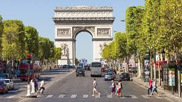
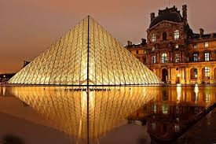
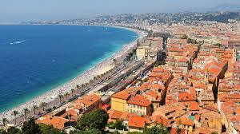
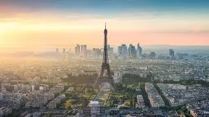
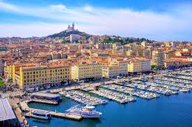
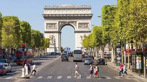
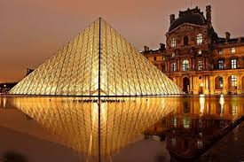
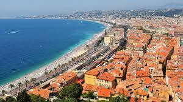
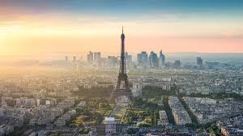
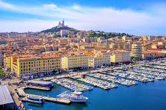

France
Explore the beauty of culture, cuisine, and art
 









France is the most visited country in the world, celebrated globally for its exquisite fine wines, deeply rich and diverse history, and an unparalleled collection of world-class museums. Among these, the Louvre stands out as one of the largest and most famous art museums on the planet, housing masterpieces such as the Mona Lisa and the Venus de Milo. Beyond its cultural treasures, France offers breathtaking landscapes ranging from the sun-drenched beaches of the French Riviera to the snow-capped peaks of the Alps. Its charming villages, sophisticated cuisine, and vibrant cities like Paris make it an irresistible destination for travelers seeking both history and modern luxury.